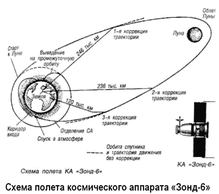

Полеты «Зондов»
Параллельно с запусками «Союзов» шла программа летно-конструкторских испытаний корабля «7К-Л1» («11Ф91», «Зонд»), предназначенного для облета Луны. Эта программа предусматривала десять беспилотных запусков; затем должен был состояться первый пилотируемый облет Луны, намеченный на 26 июня 1968 года; после чего планировалось еще два беспилотных полета и один пилотируемый.
Уже в 1965 году приступили к тренировкам космонавты, которым предстояло эти корабли пилотировать. В группу вошли уже летавшие к тому времени Валерий Быковский, Юрий Гагарин, Владимир Комаров, Алексей Леонов, Андриян Николаев, Павел Попович, а также еще не прошедшие космической школы Георгий Береговой, Лев Воробьев, Виктор Горбатко, Георгий Гречко, Георгий Добровольский, Алексей Елисеев, Валерий Кубасов, Василий Лазарев, Олег Макаров, Николай Рукавишников, Виталий Севастьянов, Анатолий Филипченко, Евгений Хрунов и Валерий Яздовский.
С самого начала программа столкнулась с недостатком финансирования, отсутствием необходимых производственных мощностей и скудностью испытательной базы. График летно-конструкторских испытаний неоднократно менялся, а дата пилотируемого полета неуклонно отодвигалась. Последний раз пилотируемый запуск переносился на 9 декабря 1968 года.
Первый корабль серии «7К-Л1» стартовал лишь 10 марта 1967 года. Целью запуска упрощенного варианта корабля «Л1», получившего в тот раз название «Космос-146», было испытание блока «Д» ракеты-носителя «УР-500К» («ПротонК»). Первое включение блока «Д» для выведения корабля на орбиту Земли прошло успешно, однако из-за неполадок в системе управления блоком второе включение привело к отклонению «Космоса-146» от расчетной траектории. Апогей увеличился, а перигей понизился, и в результате корабль на второй день полета затормозился и сгорел в атмосфере.
Второй корабль «Л1» под названием «Космос-154» стартовал 8 апреля 1967 года, но направить его к Луне не удалось. На этот раз из-за отказа в системе управления произошел досрочный сброс блоков малых двигателей, обеспечивающих запуск двигательной установки блока «Д», и корабль остался на орбите ИСЗ.
Вывод на орбиту третьего корабля «Л1» не состоялся вообще. При его запуске 28 сентября 1967 года отказал один из шести двигателей первой ступени ракеты-носителя «УР500К», и она была подорвана на 67-й секунде полета. Зато была испытана система аварийного спасения на участке работы первой ступени при максимальных скоростных напорах.
Следующая попытка запустить «Л1» 22 ноября 1967 года тоже оказалась неудачной. На этот раз не набрал необходимой тяги один из четырех двигателей второй ступени ракетыносителя. Успешно сработала система аварийного спасения, которая увела спускаемый аппарат из ракетного комплекса.
И только 2 марта 1968 года корабль «Л1» под названием «Зонд-4» был выведен на орбиту, затем с помощью блока «Д» перешел на эллиптическую орбиту с апогеем около 300 тысяч километров. Однако облет Луны опять не состоялся — корабль направился не в ту сторону. 9 марта при подлете к Земле из-за сбоев в работе звездного датчика не была выполнена необходимая ориентация для входа в атмосферу.
Спускаемый аппарат пошел на баллистический спуск в незапланированный район и был подорван системой самоликвидации над Гвинейским заливом.
Во время этого полета произошла любопытная история, которая заставила поволноваться американцев. В Евпаторийском Центре управления полетом, в специальном изолированном бункере находились Павел Попович и Виталий Севастьянов, которые в течение шести суток вели переговоры с ЦУПом через ретранслятор «Зонда-4», имитируя тем самым полет к Луне и обратно. Естественно, переговоры были зафиксированы американцами, и специалисты НАСА решили, что советские космонавты летят к Луне. Вскоре все разъяснилось.
23 апреля 1968 года при запуске следующего корабля «Л1» после сброса головного обтекателя во время работы второй ступени ракеты-носителя произошло замыкание в системе управления кораблем, приведшее к вращению по крену. Сработала система аварийного спасения, и полет был прерван.
При подготовке к седьмому запуску, намеченному на 21 июля 1968 года, корабль «Л1» был поврежден струей жидкого окислителя из лопнувшего бака блока «Д». В итоге этот корабль так и не получил сертификат годности к полету, Наконец, 15 сентября 1968 года корабль «Л1» под названием «Зонд-5» был успешно выведен на траекторию полета к Луне, 18 сентября обогнул ее и произвел фотографирование поверхности с высоты 1960 километров.
Помимо обычного оборудования «Зонд-5» нес на борту биоконтейнер с двумя живыми черепашками. Впервые в истории живые существа, рожденные на Земле, облетели другое космическое тело.
Вот уж воистину советские черепахи — самые быстрые черепахи в мире!
Но это все шуточки, а сотрудникам ЦКБЭМ в те дни было совсем не до смеха. На обратном пути из-за ошибки операторов вышла из строя от нагрева гироплатформа, отказал и датчик ориентации по звездам и Солнцу. Коррекция траектории «Зонда-5» производилась с помощью микродвигателей ориентации и датчика Земли, это позволило спускаемому аппарату совершить спуск по баллистической траектории в Индийский океан. Черепашки вернулись на Землю живыми и невредимыми.
Следующий корабль, получивший название «Зонд-6», был запущен 10 ноября 1968 года и полностью выполнил программу полета. Только на заключительном этапе произошла разгерметизация спускаемого аппарата — это произошло из-за того, что выбранный тип резины для герметизации стыков при низких температурах изменил свои свойства.
При прохождении атмосферы разгерметизировался и парашютный контейнер, а когда парашют на высоте около семи километров все же раскрылся, произошел его преждевременный отстрел. В результате спускаемый аппарат разбился о землю, но черепахи, находившиеся на борту, перенесли удар и выжили. Удалось извлечь из искореженного спускаемого аппарата и фотопленки со снимками Луны, которые впоследствии были опубликованы.

К концу 1968 года стало ясно, что США могут опередить СССР в первом полете к Луне. И тогда члены трех «лунных» экипажей (Алексей Леонов и Олег Макаров, Валерий Быковский и Николай Рукавишников, Павел Попович и Виталий Севастьянов) обратились с письмом в Политбюро ЦК КПСС с просьбой разрешить лететь к Луне в ближайшие дни, невзирая на аварии. Они мотивировали свое решение тем, что надежность корабля заметно возрастет, если на его борту будут находиться космонавты.
В первых числах декабря космонавты вылетели на космодром и находились там в течение недели, надеясь, что поступит срочное указание о запуске. Однако его так и не последовало — в ЦК КПСС решили не рисковать.
А 21 декабря 1968 года в направлении Луны стартовал «Аполлон-8» с тремя астронавтами на борту. Они совершили десять витков вокруг Луны и успешно возвратились на Землю.
Первый этап «лунной гонки» был проигран. И продолжение программы пилотируемого облета Луны по схеме «УР500К-Л1» потеряло политический смысл.
Однако прекратить летно-конструкторские испытания уже изготовленных и профинансированных кораблей посчитали нецелесообразным. 20 января 1969 года испытания были продолжены, но опять неудачно. Из-за нештатной работы двигателей 2-й и 3-й ступеней ракета-носитель была подорвана.
Правда, система аварийного спасения успешно возвратила на Землю спускаемый аппарат.
Следующий старт состоялся 8 августа 1969 года и прошел полностью успешно. Корабль «Зонд-7» совершил облет Луны, произвел ее фотографирование и 14 августа после управляемого спуска в атмосфере успешно приземлился южнее Кустаная всего в 50 километрах от расчетной точки.
Последний пуск корабля серии «Л1» состоялся 20 октября 1970 года. «Зонд-8» облетел Луну, но при возвращении на Землю со стороны Северного полюса из-за отказа датчика Солнца совершил баллистический спуск в Индийский океан.
Еще два корабля «Л1», полностью оборудованных для пилотируемого полета, так и остались на Земле.